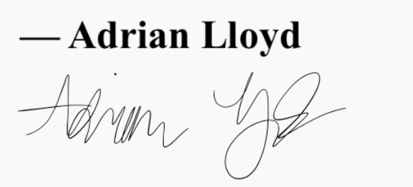

When I was 9 years old, my fascination with games like Minecraft turned into curiosity around how they were made. It wasn't long before I downloaded my first Python IDE, and began developing simple terminal-based programs and rudimentary text adventure games. After gaining a basic grasp of the syntax, I moved on to learning Visual Basic, on the advice of an older peer I knew from school. I would spend my free time – early in the morning before school, and all evening when I got home – building everything from platformer and fighter games, to Microsoft Word clones, to "AI" chatbots that could, at most, answer basic questions.
My fascination with building things quickly became a genuine interest in code. I spent time learning the basics of HTML, dove further into Python and VB, and eventually learned Adobe's ActionScript. From there, I began building what became an enormous number of simple (and admittedly, often shoddy) Flash games which I uploaded to my Newgrounds.com account. By that point however, my interest was in the building process – from ideas, to execution, to polishing my code. I enjoyed the process of building things that other people could use and play, even if they won the Newgrounds Turd of the Week Award once or twice (and yes, that was a real thing in those simpler times).
I spent considerable amounts of time becoming fluent in Java, and joined my school's FIRST™ Robotics team, being named a Core Programming member upon my arrival. In my time on the team, I learned Flutter and Dart with Firebase to build assistive mobile apps for team members, and I learned Ruby in my free time, becoming fluent enough to build simple terminal games and applications.
While in high school, I also learned C# and Unity, and deepened my knowledge of game development. During the COVID-19 pandemic, and inspired by playing Super Mario Bros. with my family in quarantine, I used these Unity skills to begin building a platformer game called Stratum Hollows. While still unfinished to this day, the experience of building that game motivated me to begin participating in online game jam competitions, to challenge and improve my development skills. Some time later, I also began running BOOT Camp, a series of online classes I developed, teaching kids from the ages of 6 to 12 how to get started with programming their own games, using Scratch, PyGame, and later Unity.
Since 2021, I've been pursing a Bachelor's Degree in Computer Science at Dalhousie University. In the summer of 2023, I began an experimental project to develop an object-oriented language called Murphy, which compiles into the big three web development languages. In the 2024 Global Game Jam, I lead a team to win the Dalhousie jam site's Most Ambitious Game award, for developing a full-fledged Unity VR game from scratch in less than 48 hours -- having never previously used Unity's XR toolkit.
I am, to my core, a perfectionist. Pouring over code with a fine-tooth comb to catch flaws and improve robustness is something that has come naturally to me. I believe there is a unique kind of beauty in algorithms that not only work, but do so efficiently and elegantly. Building code that functions is a science – but building simple, testable, efficient, elegant, well-documented, and well-factored code is, in many ways, an art.
My most concrete application of this philosophy has been at work; since February of 2024, I have worked as a Program Analyst for DataAnnotation.Tech, training AI models to write better code by annotating and modifying programs. I have gained extensive experience in languages like C, Rust and Swift, and I have greatly expanded and practiced my knowledge of the languages I've spend more than half my life learning. My inner perfectionist and my wide knowledge base have made me a natural fit for this role, and I have been privileged and grateful to have gained the experience I have.
My personal guiding mission is to build software that doesn't just work, but keeps working, and works well. I am not satisfied with my fluency in the languages I know; I strive to stay ahead of the curve, and develop a deep, granular degree of expertise in a wide-ranging number of fields and disciplines. There truly is always more to learn in this field. Gaining new experience and knowledge is as rewarding and exciting an experience as it was when I was a kid, learning Python for the first time. Cliché as it may be, I'm always looking for the next challenge, the next experience, and the next chapter on my journey – it's what I'm made to do.
